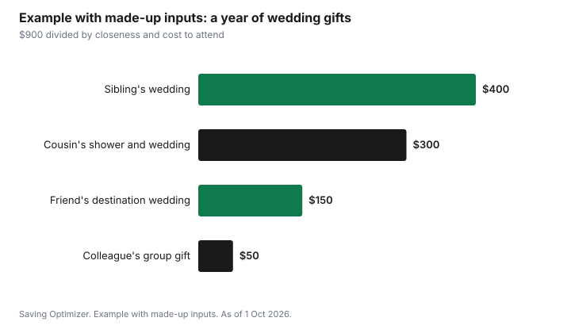

Weddings · Canada
How Much to Give as a Wedding Gift in Canada: Cash, Registry and Tight Budgets
There is no official amount to give as a wedding gift in Canada, and the right number starts from your own budget, not from the cost of the couple's reception, as of 1 October 2026. Decide how much you can spend on all the weddings, showers and stags in a year, then give more to people you are closest to and less when you are already paying a lot to attend, such as flights and hotels for a destination wedding. Cash, cheques and e-transfers are common in many Canadian communities, while registries suit couples who ask for them. A thoughtful card and a modest gift are always acceptable when money is tight.
Key takeaways
- No rule says your gift must cover your meal. Give what fits your budget.
- Set a yearly budget for all weddings, showers and stags, then divide it.
- Closeness matters most: family and close friends usually get more than colleagues or distant relatives.
- Travel costs count: for a destination or out-of-town wedding, many people give less because attending already costs a lot.
- Cash and registry gifts are both fine; follow the couple's wishes and your community's customs.
- Example with made-up inputs: a $900 yearly budget covers three weddings and a shower with different amounts for each.
Start with your own budget
In a year with several weddings, costs add up fast: gifts, outfits, travel, hotel nights, showers, stag or stagette weekends. Write down every event you have been invited to and set one total for the year. Then decide how much of that total goes to gifts and how much to attending. If the total is more than you can afford, it is fine to decline some events or attend only the wedding. A sinking fund spreads the cost over the year.
What changes the amount
| Factor | Give more | Give less |
|---|---|---|
| Closeness | Close family, best friends, wedding party | Colleagues, distant relatives, plus-one of a guest |
| Cost to attend | Local wedding, no hotel | Flights, hotel nights, destination wedding |
| Events | Only the wedding | Also paying for showers, stags and wedding-party outfits |
| Who is giving | Couple or family giving together | Single guest |
| Community customs | Where cash gifts are expected and amounts are known | Where small registry gifts are the norm |
Some families and communities have strong customs about cash gifts, and guests know the usual range. If you are unsure, ask a family member or a friend who knows the couple's circle; it is a normal question.
Cash or registry
Many couples ask for cash, often toward a home, a honeymoon or paying off the wedding. Others create a registry with items at a range of prices. Follow what the couple asks for. A registry makes it easy to give a small amount well: a $50 item the couple chose is better than a $50 item they did not want. Cash can be any amount, given in a card.
- Cash or cheque in a card at the wedding is common; bring it in a sealed card with your name.
- Many couples now accept e-transfers. Use the email or phone number the couple gave you, and confirm the name shown before sending.
- Gift cards are a middle option; know the rules on fees and expiry in your province.
- Registry gifts can be shipped to the couple before the wedding so they do not need to be carried home.
Be cautious of e-transfer requests from unfamiliar accounts or messages claiming the couple's details have changed. Confirm with the couple directly by phone or in person.
Group gifts
Going in with friends, coworkers or siblings lets each person give a modest amount toward something larger from the registry, or a combined cash gift. One person collects the money and buys the gift or writes the card; list everyone's names. A group gift from a team at work is a common way for colleagues to give without each spending a lot.
Destination and out-of-town weddings
When a wedding requires flights and several hotel nights, many guests treat their presence as a large part of the gift and give a smaller amount or a registry item. Couples who choose a destination wedding usually understand this. If you cannot attend, a card and a gift within your budget is still a kind gesture. The destination weddings guide shows what guests typically spend to attend.
Small weddings, elopements and second weddings
For a very small wedding or an elopement with a party afterwards, guests often give the same kind of gift they would for a larger wedding, scaled to their budget; the size of the event does not change your relationship to the couple. For second marriages, couples often already have a household and may ask for no gifts, a charity donation or experiences. Follow what they ask. A donation in the couple's name to a charity they chose is a thoughtful option; ask for a receipt in your own name if you want a donation tax credit.
Timing and etiquette
Registry gifts are often shipped before the wedding. Cash and cards are usually brought to the reception or sent shortly after. If you cannot give right away, it is acceptable to send a gift in the months after the wedding. If you are in the wedding party, the costs of outfits, showers and travel are part of what you give, and many couples expect a smaller gift from attendants for that reason.
When money is tight
If your budget is very small, you still have good options:
- A heartfelt card with a short personal note.
- A small registry item, or a share of a group gift.
- A useful skill: photography at the shower, help with setup, a homemade item the couple would value.
- Giving after the wedding, within the first months, when your finances allow.
- Declining the stag or shower and putting that money toward the gift, or attending the wedding only.
No one should go into debt for a wedding gift. Couples remember who came and celebrated with them far more than the size of the cheque.
Example with made-up inputs: a year of weddings
These numbers are an example with made-up inputs. They are not recommended amounts. A guest has a $900 budget for wedding gifts this year.
| Event | Situation | Gift |
|---|---|---|
| Sibling's wedding | Local; closest relationship | $400 |
| Friend's wedding | Destination; flights and hotel already $2,000 | $150 |
| Colleague's wedding | Local; group gift with six coworkers | $50 |
| Cousin's shower and wedding | Local; shower gift plus wedding gift | $300 ($75 + $225) |
| Total | $900 |
The guest gives most to the sibling, less to the friend because attending already costs a lot, and joins a group gift for the colleague. Every gift is planned, so nothing goes on a credit card.

A plan
- List every wedding-related event you are invited to this year.
- Set one total for gifts and attending.
- Adjust each gift for closeness, travel and other events.
- Follow the couple's wishes: cash, registry or charity.
- Save monthly so the money is there when the invitations arrive.
| Event | Closeness | Cost to attend | Gift |
|---|---|---|---|
| Total |
Common mistakes
- Trying to cover the cost of your meal when it is beyond your budget.
- Forgetting showers and stags when planning the year.
- Sending an e-transfer to unconfirmed details.
- Leaving cash in an unsealed or unsigned card.
- Going into debt to match what others give.
Sources
- Government of Ontario, Buying or using gift cards (ontario.ca), as of 1 Oct 2026. Gift card rules in Ontario.
- Canadian Anti-Fraud Centre, advice on payment and impersonation scams, as of 1 Oct 2026.
- All amounts in the example table and chart are made-up inputs and are not recommended gift amounts.
Frequently asked questions
How much should I give as a wedding gift in Canada?
There is no official amount. Start from what you can afford for all the year's weddings and events, then give more to people you are closest to and less when attending already costs a lot, such as a destination wedding.
Should a wedding gift cover the cost of my meal?
No. That is a common idea, but there is no rule. Couples choose their reception; guests give what fits their own budgets.
Is it okay to give cash as a wedding gift in Canada?
Yes. Cash, cheques and e-transfers are common in many Canadian communities. Follow the couple's wishes, use a sealed signed card, and confirm e-transfer details directly with the couple.
How much should I give for a destination wedding?
Many guests give less, or choose a registry item, because flights and hotels are already a large cost. Couples who plan destination weddings generally understand this.
Researched and drafted with AI assistance and fact-checked against official Canadian sources. How we create content.
Disclosure: Saving Optimizer may earn a commission if a partner link is added later, such as a registry or gift card offer type. No partnership with any registry or retailer is claimed on this page, and no retailer is ranked. Education only.